A satirical graphic series by Andrew Abeles
CONSPIRACY
The Conspiracy Department uses character, humor and dramatic storytelling to examine how misinformation is invented, repeated, rewarded and believed—and what it takes to begin questioning it.
Original-series pages and later bonus material are identified separately. Select any image to open its full-resolution artwork.
Verified original sequence
Pages 1–12
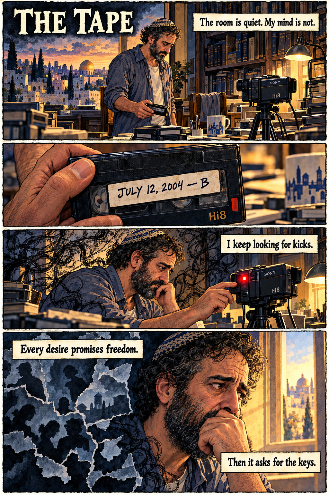
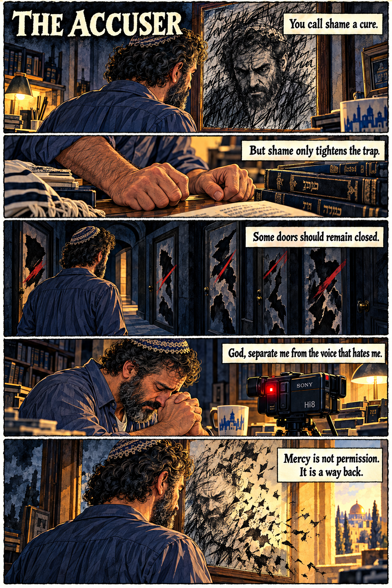
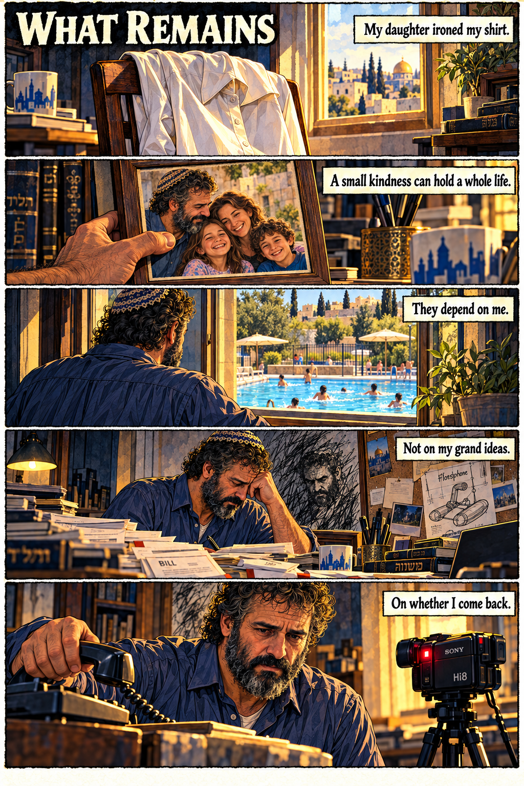
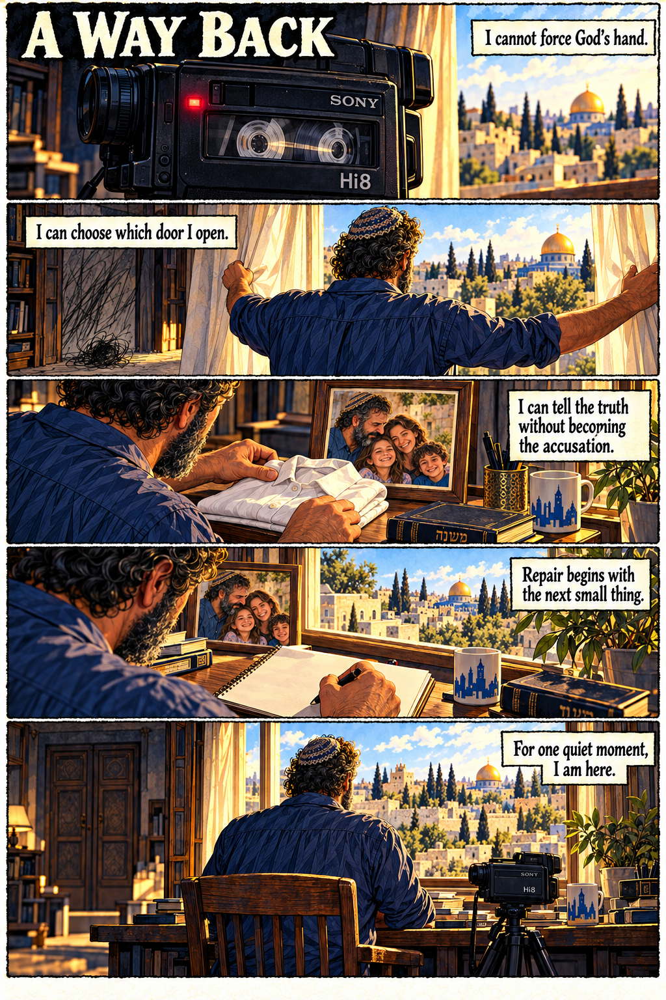
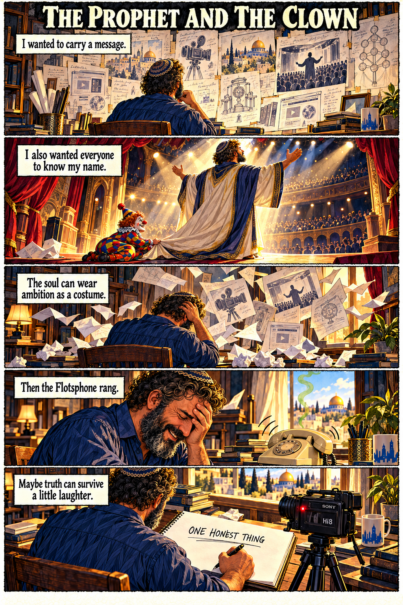
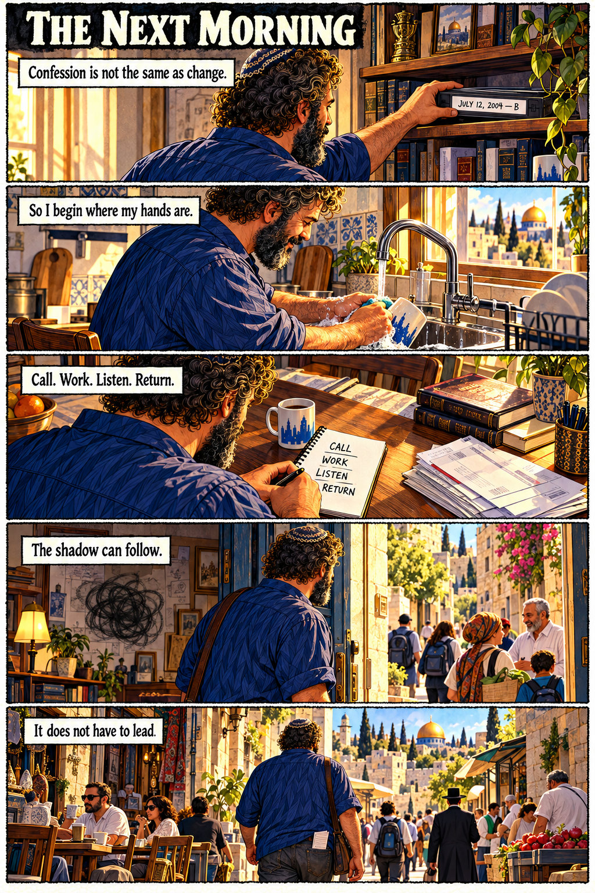
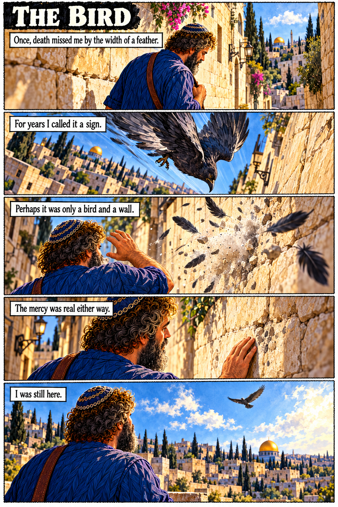
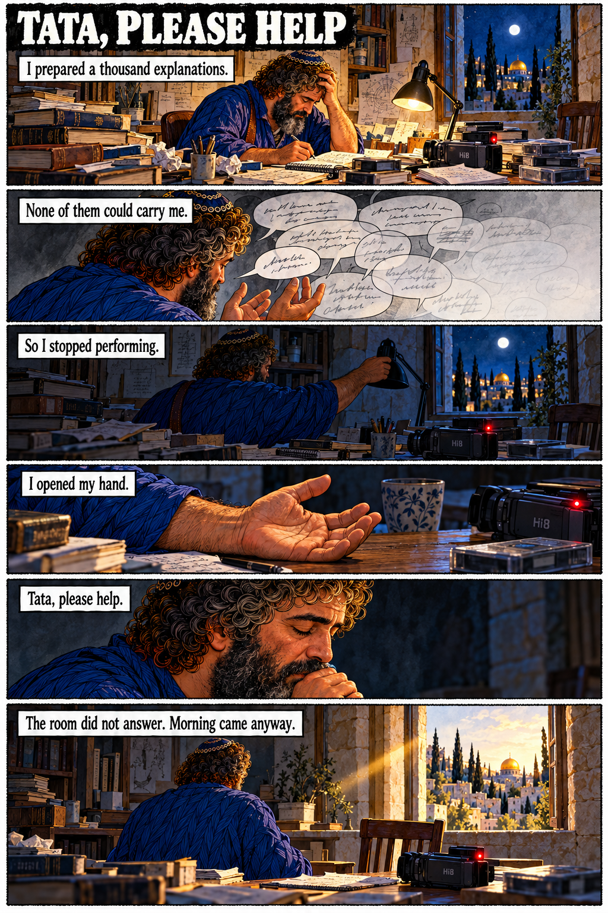
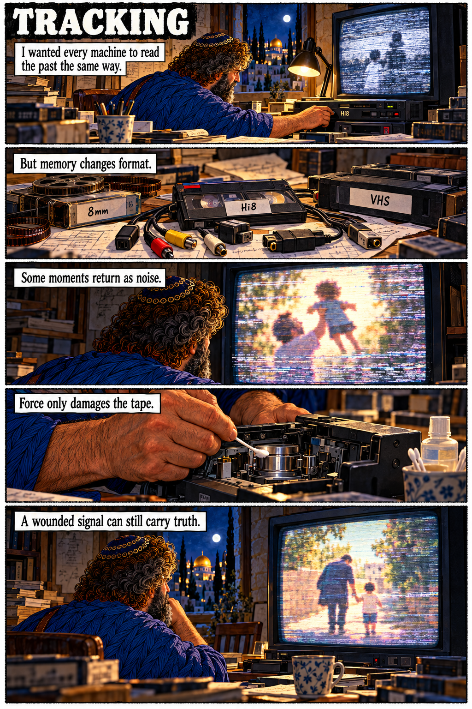
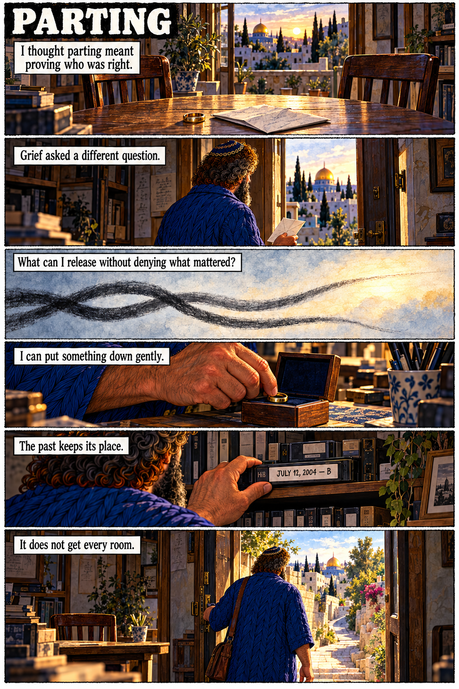
Corrected original episodes
Episodes 18–19
The original numbering and key dialogue are preserved.


Additional material
Cats
A separate comic sequence, presented outside the original numbered Conspiracy Department run.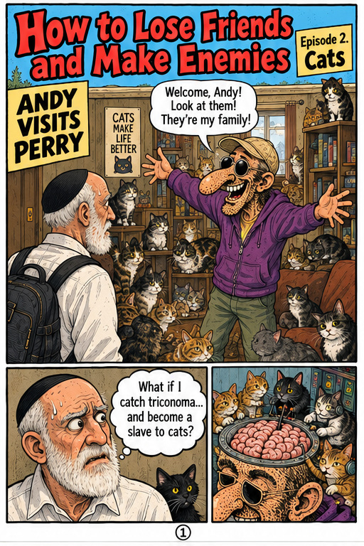
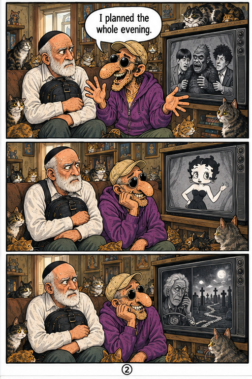
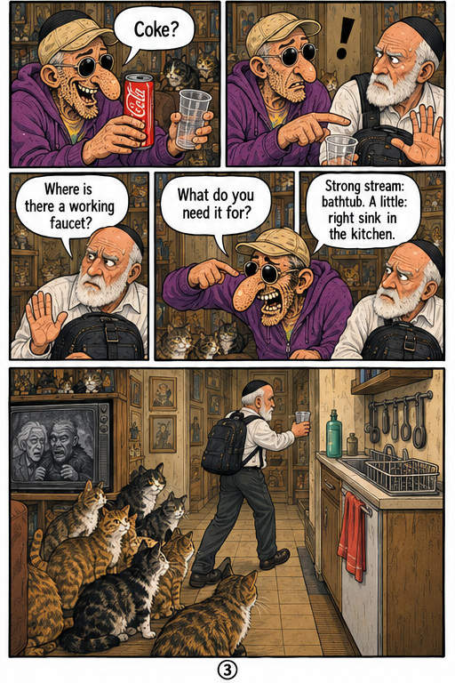
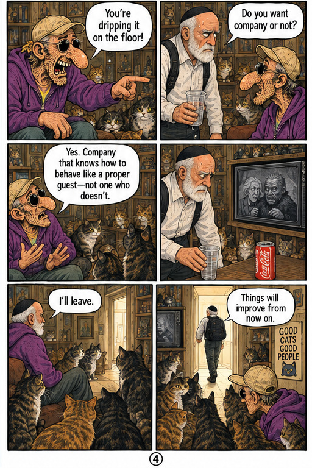